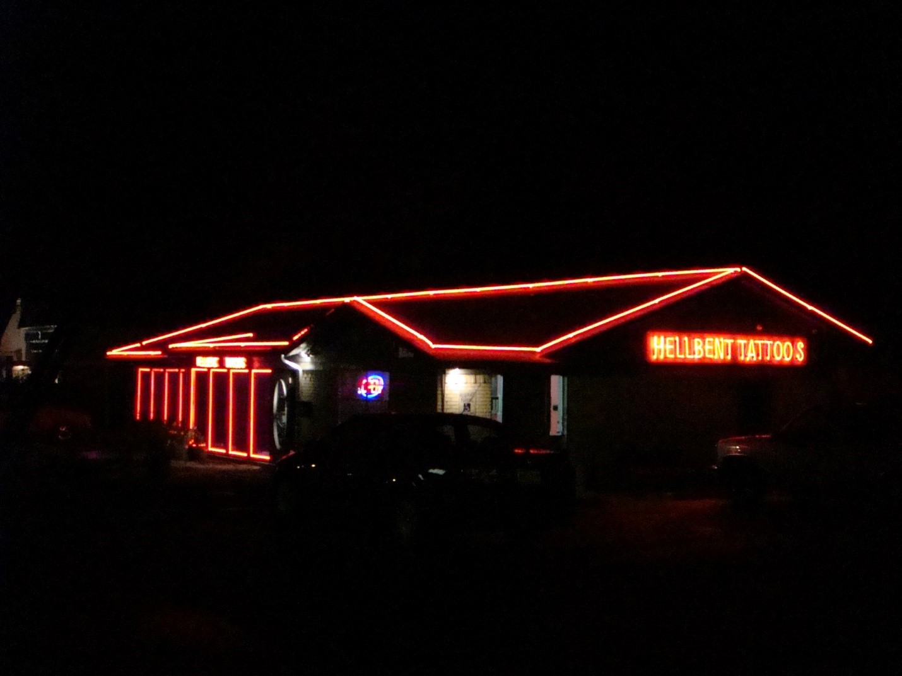
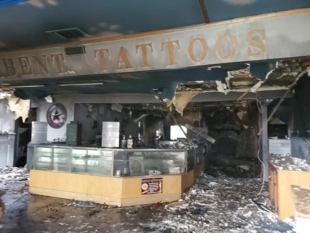

"The cleanest
tattoo shop
in Galveston!"
About Us
Red Rocker Tattoos & Body Piercings arose from the ashes of Hellbent Tattoos and Body Piercings.
Hellbent was established by artist/owner Connie Ralls and principal artist Ricky Allen Tucker in Arlington, Texas in 2004.

Hellbent quickly became one of the top-rated tattoo and piercing shops in the DFW Metroplex and was named Best of Arlington in 2008 & 2009.
In June of 2020, at the height of the COVID-19 pandemic when most businesses were already taking huge losses from being forced to shut
down, an even greater tragedy struck the Hellbent Family. A devastating fire broke out at the Hellbent studio – the shop was a complete loss
and a decision by the landlord against re-building, combined with a reluctance from the City of Arlington to allow establishment of Hellbent
elsewhere in the city, meant that Connie’s and Ricky’s passion to provide quality body art services was in jeopardy.

Faced with the uncertain economic conditions of the pandemic and without a home, the Hellbent era had come to and end. Connie contemplated
retirement and Ricky explored other careers with the hopes of continuing his love of tattoo artistry on a part-time basis. Ricky moved to
Galveston as a safe change of scenery during the pandemic while figuring out how and where he would re-emerge after Hellbent. As time passed,
he came to realize that Galveston’s lively community is where he would like to stay. Almost by chance, Connie and her husband visited Galveston,
fell in love with the Galveston vibe, and began to have thoughts of moving here as well. Soon, each of them began to think about starting up the
tattoo and piercing studio again, in Galveston.
As the idea of returning full-time to the body art business began to grow, Connie and Ricky decided to leave Hellbent in the past and completely
re-vamp their business as something truly connected to the Galveston scene. Thus, Red Rocker Tattoos & Body Piercings was born.
Red Rocker Tattoos and Body Piercings is a beach/tropical themed studio, complete with tiki hut tattoo stations and a private piercing room – all
designed to have that Galveston feel with just a little nod to the most well-known beach bum and rock and roll musician of all time.
Come check out the cleanest and safest body art studio in Galveston!